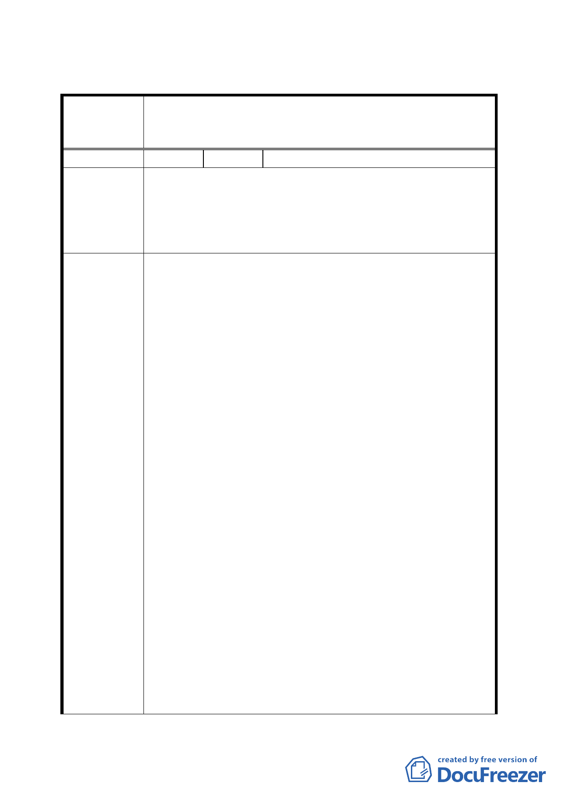

臺北市都市計畫委員會公民或團體所提意見綜理表
修訂台北市基隆河(中山橋至成美橋段)附近地區細
案 名 部計畫娛樂區(供觀光旅館使用)街廓編號 C2 基地土
地使用分區管制規定與都市設計管制要點計畫案
編
號1
陳情人 王議員孝維
為貴府 97 年 9 月 30 日府都規字第 09734571802 號公告展覽
內容，有關修訂「基隆河（中山橋至成美橋段）附近地區細
陳 情 理 由 部計畫娛樂區（供觀光旅館使用）街廓編號 C2 基地土地使
用分區管制規定與都市設計管制要點計畫案」，提出意見，
請查照辦理。
一、 有關基隆河（中山橋至成美橋段）間大彎段土地，自
81年起配合基隆河整治計畫擬定主要計畫案，在83年
擬定細部計畫至今，已近15年，原先規劃只有大彎北
段商業區及娛樂區可作商業使用，如今大彎南段（倉
儲區及工業區）及內湖科學園區皆開放可為商業使
用，而大彎北段地區仍只能做賣場、辦公室及旅館使
用，造成該區賓館林立，對該區地主相當不公平，本
席在97年2月19日對貴府97年1月30日府都規字第
09635914200號公告展覽有關大彎北段之意見時，曾主
張根據台北市分區管制使用規則規定，第三種商業區
本來就可以作住宅使用，十幾年來，該區受到貴府違
法限制「不准作住宅使用」，如今本席仍堅持就分區使
用管制規則規定，本案應由業主依「市場機制」自行
建議辦法
決定商三使用項目。
二、 又臺北市政府一再利用「台北市內湖輕工業區輔導管
理辦法」之規定，作為掩護、涉嫌圖利特定業者之工
具，使大彎南段、內湖科學園區、內湖五期重劃區等
地區，從工業區、倉儲區放寬到可經營餐飲業、一般
服務業、一般事務所、金融保險業、娛樂服務業、健
身服務業、設立企業總部等事項，幾乎包山包海，範
圍比起大彎北段土地有過之而無不及，市價亦逼近大
彎北段，公告地價及公告現值卻遠低於大彎北段，如
今大彎北段已無作商業使用之市場需求，地主僅卑微
要求從高強度之商業區及娛樂區回覆為第三種商業區
使用項目，卻處處受到刁難，對大彎北段商業區及娛
樂區地主而言，真是情何以堪！如果做商業使用有利
於地主，本席相信沒有地主願意作住宅，誠如貴府於
- 17 -